Trends Workspace
Trends are divided into the following main elements:
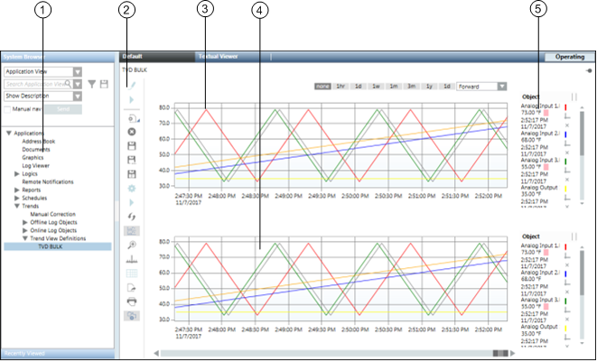
Trends Workspace | ||
| Name | Description |
1 | System Browser | Displays available Trendlog objects, as well as created Trend Views. |
2 | Configuration | Displays buttons for commonly used commands (New, Save, Print, zoom). |
3 | Compare view | Allows you to compare measured values from the same Trend View. |
4 | Trend View | The range which can be displayed and processed for online and offline trend data in chart form. These Trend Views are saved independently of the trend data. |
5 | Key | Displays information on data points that are displayed graphically in the Trend View. |
System Browser
The following nodes display in the Trends folder in the System Browser:
- Manual Correction: Link that opens the Manual Correction application.
- Offline Trend Log Objects: Lists all the offline Trendlog objects available in the automation station for a project.
- Online Trend Objects: Lists all available online Trendlog objects. An online Trendlog object is created when you define a series and save it in a Trend View definition.
However, this Trendlog object is available only on the management station. No Trendlog object is created in the automation station. - Trend View Definitions: Lists all the Trend View definitions. A Trend View definition includes all the properties required for a graphical display of the Trend View and series.
A Trend View definition does not contain process values, but only one reference to the corresponding series (Trendlog objects).
Trends Toolbar
The Trends toolbar allows you to perform the following operations:
| Function | Description |
Edit Trend | Toggles between the Edit Trend mode and the View Trend mode. | |
| Start Creation | Starts creating the trend logs depending on the configuration specified in the Edit Trend mode. |
| New Trend New Folder | Opens a new Trend View. Creates a new folder. |
Delete | Deletes the current Trend View. | |
| Save | Saves the current Trend View. |
| Save As | Saves the Trend View under a new name. |
| Save as user default | Saves the Trend View definition as a new user default. |
| Properties | Opens the properties dialog box for chart, axes, legends, and series. |
| Stop | Stops trend logging. |
Run | Starts trend logging. | |
Refresh | Refreshes the Trend View. | |
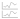 | Compare view | Opens the same Trend View a second time. |
Zoom | Allows you select a time range in the currently selected Trend View by effectively zooming in on the X-axis and Y-axis. | |
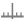 | Time bar | Shows/hides the time bar. |
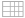 | Table view | Switches from graphical Trend View to a table view. |
| Export | Exports the Trend View Definition and saves it in a CSV file format. |
| Prints the Trend View. | |
Show legend / Hide legend | Shows/Hides the legend. This button is disabled when you display the trend in the table view. |


Chart Properties
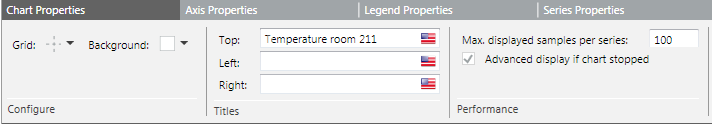
- Grid: Hides/shows the grid for the Trend View or displays it with horizontal or vertical lines.
- Background: Hides/shows the background color as well as pattern for Trend View. Allows you to define or select the background from a predefined set of colors.
- Titles : A descriptive name required for each Trend View. The name entered displays on the Trend View. You can also add your own title to the left and right axis of the Trend View.
- Maximum displayed samples per series: Specifies how many values are displayed in a Trend series during the defined Trend View period.
This setting directly determines if Trend View displays the values in a reduced view (For more information, see Data Point Key, Reduced values).
NOTE: A maximum of 2000 values can be displayed in a Trend series during the defined Trend View period. - Advanced display if chart stopped: Displays quality attributes, markers, and values, even for cleared check boxes, if the open Trend View is updates continuously.
This means that updating the values takes longer.
Axis Properties
Allows you to specify the settings for the X and Y axis.
Each chart can display a left and right Y-axis independent of each other. Series can be selectively assigned and scaled to either axis, by default or manually. Scaling is set to automatic by default.
This means that the range is defined by the highest amplitude of all displayed series, with analog data types attached to the left axis and digital data types to the right axis.
When a single Trend View contains several digital data types, these are shown one above the other with an offset.
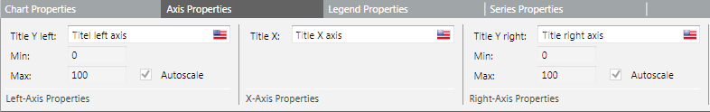
- Title Y Left: Displays the title on the left side of the Trend View.
Auto Scale: A minimum and maximum range must be defined if auto scale is disabled. - Title X : Displays the title below the Trend View.
- Title Y Right: Displays the title on the right side of the Trend View.
Auto Scale: A minimum and maximum range must be defined if auto scale is disabled.

NOTE:
Automatic/manual scaling properties act on both main and comparative view.
Automatic scaling is temporarily disabled when switching to Zoom mode.
Legend Properties
The position can be left, right, above, or below the Trend View. Under a comparison view, the legend always displays on the right.
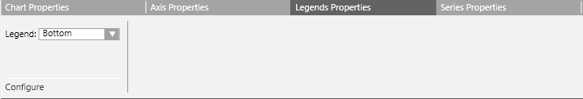
Series Properties
Series properties allow you to define the individual series for the corresponding properties in Trend View.
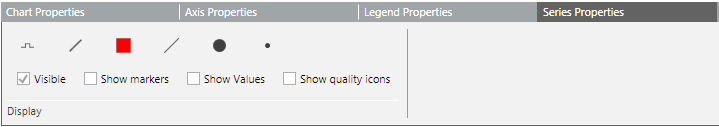
- Line Properties: Defines the appropriate property type, form, and color, as well as the property for the series.
- Visible: Displays the trend curve if this check box is selected.
- Show Markers: Defines the corresponding property type, and size, as well as the corresponding property for the series. The markers are only displayed in the trend curve if this check box is selected.
The X-axis is always the time axis. The diagram display is calculated to correspond to the selected time line. - Show Values: Displays numerically each measured value for the read value if this check box is selected.
Values may overlap (unreadable) in the Trend View for intensive measured recorded values or a time range that is too large.
In this case, select a smaller time range or switch to display values. - Show Quality Icons: The Trend View can display a number of state attributes, referred to as quality attributes, along with the trend data.
These enable you to identify problems with the data point being recorded, and assist with the diagnosis of plant conditions.
Line Properties | |
Line type | 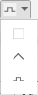 |
Line style | 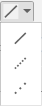 |
Stroke color | 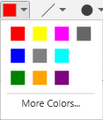 |
Stroke thickness | 1-6 |
Marker style | 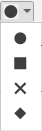 |
Marker thickness | 1-10 |
Colors
You can assign a color to the Trend View (background color) or to each individual series (line). You can choose between:
- Predefined set of colors
- Custom colors
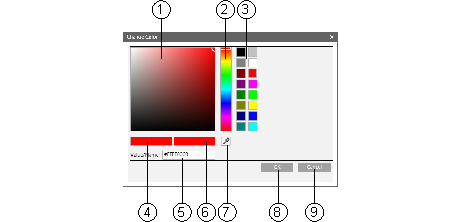
Colors Workspace | |
| Description |
1 | Select from predefined colors. |
2 | Select with mouse. |
3 | Directly enter each color code. |
4 | Selected color. |
5 | Enter a color code. |
6 | Select pattern. |
7 | Select an existing color pattern on the screen. |
8 | Confirm changes. |
9 | Discard changes. |
Time Bar Scrollbar
The Time bar consists of a vertical bar and a time/date field. The time bar can be dragged anywhere on the time axis. The data legend below the Trend View shows the value for a point.
The most recent value with information related to the point, date/time, quality displays at the intersection of the time bar and the graph representing the point.
Compare View
The Compare View allows you to compare and analyze the data of trended objects over a period of time.
The Trend View below the first view is the current Trend View that serves as the basis for the first view which is the compare view.
Any changes to the time range in the current Trend View are reflected in the comparative Trend View.
You can link the same or another Trend View for data analysis that applies the same X-axis for the time range to both Trend Views.
Using the pre-defined time ranges present in the comparative Trend View, you can select the time range for which you want to display the data in the comparative view.
In order to view the trend data in a compare view, you must stop the Trend View and hide its properties.
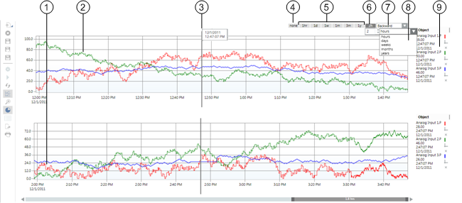
| Description |
1 | Current Trend View |
2 | Compare View |
3 | Time bar with time displayed in the compare view |
4 | No offset |
5 | Predefined offset buttons |
6 | Freely definable offset range (range, unit) |
7 | 1x forward or 1x back for the selected offset range |
8 | Freely definable offset range in hours, days, weeks, years |
9 | Data Point Key |
Same Trend View
This type of comparison is especially useful when analyzing the data for individual components, such as a room temperature for a room.
The time offset allows you to easily check how the corresponding measured value behaves at the same time of day.
NOTE 1:
The legend displays the last left measured value in the time bar.
NOTE 2:
In the legend, the displayed value is not displayed based on the intersection of the time bar and trend curve. Instead, the time/date display is based on the time bar position.
Trend View
The Trend View consists of a chart area where series are viewed and manipulated.
All the main elements such as the axes, scaling, titles, and colors can be configured in Trend View properties (by taking over defaults or changing the current Trend View).
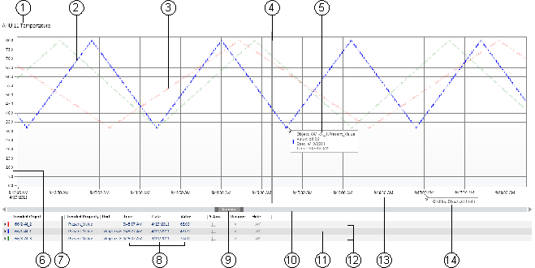
Trend View | |
| Description |
1 | Displays the title of the current Trend View. |
2, 11 | Displays and highlights the selected trend curve in Trend View. |
3, 12 | Displays unselected trend curves as collapsed curves. |
4 | Displays the time bar. The time bar can be dragged anywhere on the time axis. The data legend at the bottom of the Trend View displays the value or state valid at the point where the bar intersects with the series. When the time bar is hidden, the legend displays the last correct value for the Trend View. |
5 | Displays the present measured value for the series at the cursor. The current measured value in a graphic curve is displayed by moving the mouse pointer to the desired position. The precise measured points can be better displayed by enabling the marker for the series. |
6 | Displays the Y-axis with the appropriate scaling. Each chart can display a left and right Y-axis independent of each other. Data series can be selectively assigned and scaled to either axis (by default or manually). |
7 | Legend header. |
8 | Online: Current value from the automation station. |
9 | Displays time or date range display across the entire selected display range. |
10 | Displays time range scrollbar. |
13 | Displays time and/or date display for the grid. |
14 | Displays time range display between grid sections. |
Legend
The legend for the series contains information on the given data point in the Trend View. When you launch the Trends application, the legend displays at the bottom by default.
You can resize the legend using the horizontal splitter. The option to resize is available only if the legend is positioned at the top or bottom.
On selecting a new Trend View, the legend retains its size depending on the last resize.
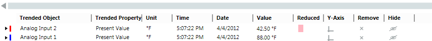
Data Point Key | |
Column | Description |
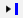 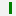 | Series source. Indicates if the displayed data is recorded by the management station data (online ) or a field device (offline ). |
Trended Object | Displays the object names for the Trendlog object. |
Trended Property | Displays the trended property name for the object. |
Alias | Displays the alias name for the object. |
Unit | Physical unit for the data point. |
Value | Displays the last displayed current value (unless the time bar is in use. In this case, the value is displayed at the intersection). |
Time | Displays the time for the most recent value (unless the time bar is used; in this case, the value is displayed at the intersection). |
Date | Displays the date for the most recent value (unless the time bar is used; in this case, the value is displayed at the intersection). |
Reduced | When this symbol displays, not all values for this series are displayed in the Trend View (dependent on the displayed time period). |
Y-axis | Indicates the Y-axis where the point is scaled. |
Remove | Removes the selected trend value from the Trend View. |
Show/hide | Temporarily shows/hides the trend curve in the Trend View. |
System Name | Displays the system name of the trended object. The system name enables you to identify the origin of the trended objects in a distributed environment. |
Reduced Display :
Displays a maximum of two values per interval. The interval is calculated based on the set sample rate for the Trend View (Trend Chart Properties).
- 1 interval = Max. displayed samples per series/2.
- Example 1: 100/2 = 50 intervals
- Example 2: 400/2 = 200 intervals
A reduced display can also occur with just a few values, for example, when the values are recorded within a short interval. With the reduced display, minimum and maximum values always display.
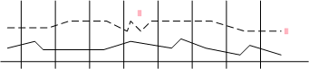
Quality Attributes
The Trend View can display a number of state attributes, referred to as quality attributes, along with the trend data.
These enable you to identify problems with the data point being recorded, and assist with the diagnosis of plant conditions.
With the reduced display, not all quality attributes can be displayed. In order to display all quality attributes, limit the time period.
Only the highest priority displays in the Trend View if several states are active.
The priority sequence in the previous quality attributes table is read in descending order (highest to lowest priority). The following table describes these quality attributes:
Quality Attributes | ||
Symbol | BACnet | Status and Description |
DRIVER_FAILED (Bit=1) | No connection : Indicates that no connection exists to the logged data point. | |
DRIVER_FAILED (Bit=0) | Connected : Indicates that the connection exists to the data point. | |
ERROR_IN_LOG | Error : Indicates an error in the Trendlog object. | |
T_LOG_ENABLE (Bit=0) | Trend disabled : Indicates that the Trendlog object is disabled. Text display for the last known value. | |
T_LOG_ENABLE (Bit=1) | Trend enabled : Indicates that the Trendlog object is enabled. | |
T_PURGED | Buffer deleted: Indicates that the buffer in the Trendlog object is deleted. | |
T_ROLLOVER | Buffer full : Indicates that the Trendlog buffer is full. | |
T_TIME_SHIFT | Time change : Indicates that the time in the automation station was changed (displayed in table only). | |
LOG_INTERRUPTED | Power fail : Indicates that the automation station has been set to state Log_interrupted in the trend buffer (for example: in the event of a power outage, application program stop, change of data point log type). This may cause trend data from not being logged. | |
OUT_OF_SERVICE (Bit=1) | Out of Service switched on : Indicates that the Out of Service property is switched on. | |
OUT_OF_SERVICE (Bit=0) | Out of Service is normal: Indicates that the Out of Service property is switched off. | |
FAULT (Bit=1) | Trendlog object error : Indicates that a data point error exists in the Trendlog object (values may not be usable for follow-on evaluation). | |
FAULT (Bit=0) | Return from Trendlog error : Indicates that the data point error returns to the normal state. | |
ALARM (Bit=1) | In alarm state : Indicates that the data point is in the alarm state. | |
ALARM (Bit=0) | Return from the alarm state : Indicates that the data point has returned from the alarm state. | |
OVERRIDDEN (Bit=1) | Into override (module) : Indicates that the data point on a module is overridden. | |
OVERRIDDEN (Bit=0) | Return from overridden (module) : Indicates that the data point's override on the module is removed. | |
NOTE:
Quality attributes can only be evaluated if this function supports the corresponding subsystem. An alarm setup on the management station does not possess quality attributes. Therefore, an alarm cannot display an alarm bell in the Trend View.
Table View
The table view offers a view that differs from the standard view where curves are displayed as series. Each series displays as a column in the data grid. The first column (right) shows the time stamp.
The column displays by merging all time stamps for all values in each series. It is displayed at an accuracy of 1 second.
In order to view the trend data in a table view, you must stop the Trend View.
Values are displayed as per value scaled units (if configured). For more information, see Value Scale Units in Setting How Property Values Display.
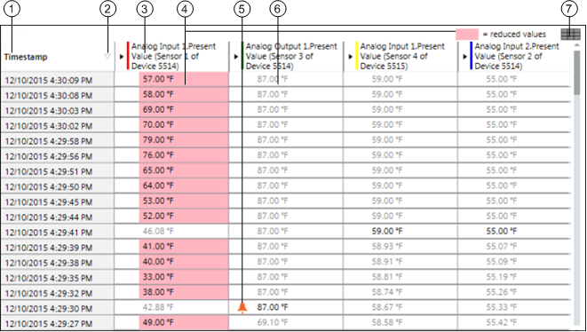
| Description |
1 | Timestamp for measurement. |
2 | Sorts values by ascending or descending timestamp. |
3 | Displays the trended object along with the property and alias of the object. It also displays the corresponding color of the trended object in the graphical view. |
4 | Displays the values in a reduced manner and with a red background if a long time frame is selected in the Trend View. |
5 | Displays the quality attribute with measured value, except Normal. |
6 | Displays interpolated values when this function is active. |
7 | Shows/hides the interpolated values. |
There are two display types in table view:
- Normal view: The corresponding cell has a value or is empty.
- Interpolated view: The corresponding cell is empty and shows a linear interpolated value based on previous current and subsequent current selection.
NOTE:
The table view only shows values as per the graphical time range. These values are exported during data export.
Edit Trend Mode
The Edit Trend mode provides options to operate on multiple BACnet trend log objects in a single click.
If you have to create, modify, or delete multiple BACnet trend log objects, then performing this procedure on individual objects requires a huge engineering effort.
Therefore, in order to overcome this difficulty, there are options provided in the Edit Trend mode that enable you to create, modify, and delete the multiple BACnet trend log objects in a single click.
In this mode, you can only work with BACnet points and BACnet trend log objects.
You must have the Configure application right on the Trends application and BACnet Configurator to be able to work with the Edit Trend mode.
When you are in the Edit Trend mode, only the Edit Trend  and New
and New  buttons are available.
buttons are available.
The Edit Trend mode allows you to perform the following tasks:
Create Trend
- Allows you to create multiple BACnet trend log objects in a single click. This menu option is available depending on the following:
- The selected BACnet points belong to the same system and subsystem.
- The selected BACnet points are not BACnet trend log objects or BACnet trend log multiple objects.
- Allows you to modify the multiple BACnet trend log objects or multiple BACnet trend log multiple objects in a single click. This menu option is available depending on the following:
- The selected objects are either BACnet trend log objects or BACnet trend log multiple objects that belong to the same system and subsystem
- The selected objects are not BACnet points.
- Allows you to delete the multiple BACnet trend log objects or BACnet trend log multiple objects. This menu option is available depending on the following:
- The selected objects are BACnet trend log objects belonging to any system or subsystem.
- Allows you to change the default property of the selected BACnet points. This menu option is available depending on the following:
- The selected objects are not trend log objects or trend log multiple objects.
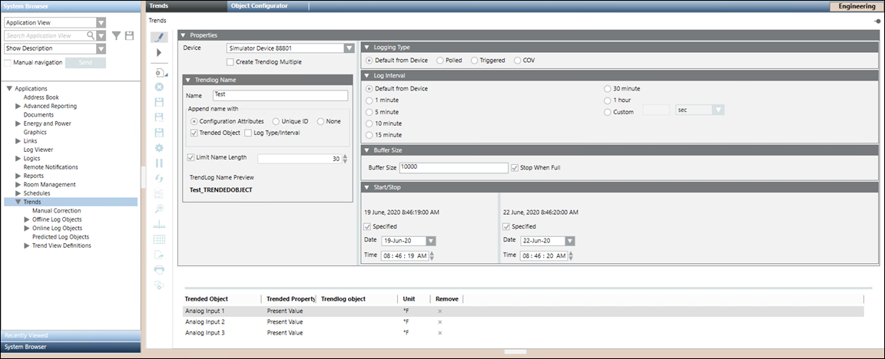
Properties
- Device: The device on which the trend log object is to be created.
While selecting the device, you must ensure the following: - The device belongs to the same subsystem as that of the BACnet point selected for the trend log creation.
- The device belongs to the same network and the same driver as that of the BACnet point selected for the trend log creation
- Create Trendlog Multiple: Check this box if you want to create trend log multiple object for all the selected points.
Trendlog Name
- Name: Allows you to specify a unique name for the trend log object.
- Configuration Attributes: Allows you to select either Trended Object checkbox or Log Type/Interval checkbox, or both.
NOTE: If you select Trended Object checkbox, then the name of the Trended Object is appended after the name of the trend log object.
If you select Log Type/Interval checkbox, and Default from Device or Polled radio button, and thereafter select any one of the specified time interval values, then the selected time interval value will be appended after the name of the trendlog object.
If you select Log Type/Interval checkbox, and Triggered or COV radio button, then the string Triggered or COV will be appended after the name of the trend log object respectively.
If you select Trended Object checkbox and Log Type/Interval checkbox, then the name of the Trended Object and the selected time interval value (if Default from Device or Polled radio button is selected) or the string Triggered/COV (if Triggered or COV radio button is selected) will be appended after the name of the trend log object. - Unique ID: Allows you to specify a numeric value in the Starts With text box, which is appended after the name of the trend log object. In case of creation of multiple trend log objects, Unique ID is used.
- None : Allows the name specified in the Name field, to be the only name of the trend log object.
In case of selection of a single Trended Object, None radio button is selected by default.
If you select more than one Trended Object, then by default the Configuration Attributes radio button, Trended Object checkbox is selected, and None radio button is disabled. - Limit Name Length: Allows you to specify the name length, in case where the device imposes a limit on the length of the name of trend log objects. A minimum name length of a trended object is enforced in case of advanced configurations, to provide a more meaningful name.
- TrendLog Name Preview: Displays a preview of name, of the trend log object.
Logging Type
- Default from Device: The data entry is logged according to the default logging type of the device.
- Polled: The data entry is polled periodically.
- Triggered: The data entry is triggered when the trigger property is set to ON.
- COV: The data entry is captured when the value of the trended property changes.
Log Interval
- Log Interval: This setting will be available only when the Logging Type is set to Polled. Specify the time interval when the trend samples are to be collected.
You can either select any one of the specified interval values or can specify a custom value for the log interval.
Buffer Size
- Buffer Size: Specify the maximum number of records that can be stored in the buffer
- Stop when full: Indicates whether or not the logging of records in the buffer should stop when the buffer is full.
If this box is checked, the logging of records in the buffer will stop when the number of records in the buffer reaches the buffer size.
Start/Stop
- Start/Stop: Specify the start and end date/time when you want to start and end the recording of trend values.